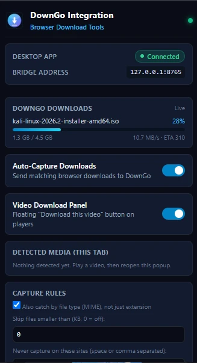
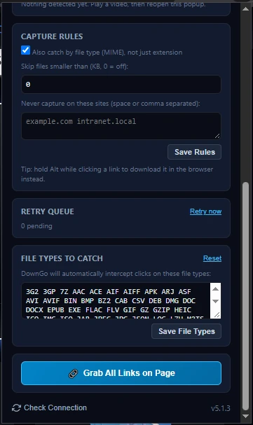

Send a selected link
Use the right-click menu to send a link to the DownGo desktop app.
DownGo Browser Integration · Chrome
Connect the browser to the DownGo desktop download manager on the same PC. Choose which links and supported downloads to hand off.
The desktop app must be installed and running on this computer.

What the extension does
Use the right-click menu to send a link to the DownGo desktop app.
Scan the current page, review detected links, and select the items you want to send.
When enabled, matching browser downloads can be handed off to DownGo. If DownGo does not accept the transfer, the browser download continues.
When enabled, the panel can show media directly exposed by supported pages. YouTube, DRM-protected content, and segmented streaming playlists are not supported.
Check whether the desktop app is connected and view active download progress from the extension popup.
Choose file types and excluded sites for Auto-Capture. Auto-Capture and the Video Download Panel are off by default.
Extension screenshots
Check the connection, download status, and optional capture rules in the extension popup.


Get started
The extension communicates with DownGo over a local connection on the same PC.
127.0.0.1:8765Privacy and limits
Auto-Capture and the Video Download Panel are off by default. You can disable them and restrict site access in Chrome settings. When you request a download, the extension sends its URL, filename, and referring page to the DownGo app on this PC. Matching cookies may also be passed to the local app for a requested download; they are not sent to DownGo's cloud server.
The extension does not download YouTube videos. Use it only for content you are authorized to access and save. Review the DownGo privacy policy for the desktop app and the Chrome Web Store listing for extension-specific disclosures.